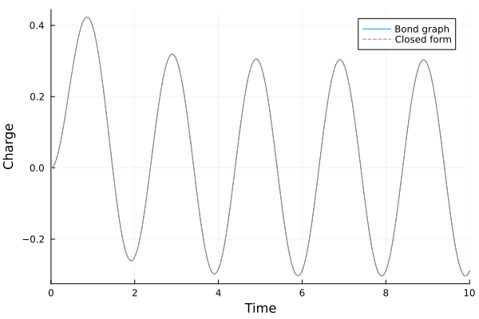
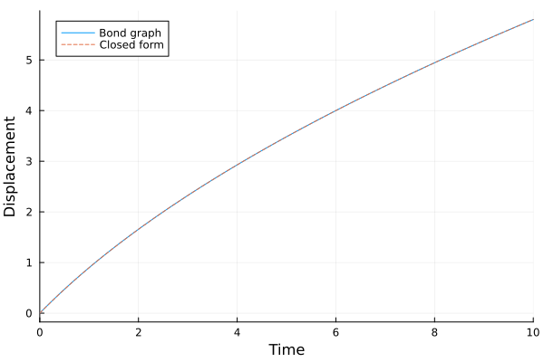

Signals and Detectors
The source files for all examples can be found in /examples.
Bond graphs carry information on activated bonds: signals that drive a source or a two-port's modulus, or that report a measured effort or flow, without carrying power (Karnopp, Margolis & Rosenberg, §3.2; Borutzky 2011, Ch. 3). Here the signals are MTK standard-library blocks:
Se(),Sf()without a value read their effort or flow frominput(MSe, MSf);TF(),GY()without a modulus read it frominput(MTF, MGY);De()andDf()put the effort or flow of their bond onoutput.
Each model below is checked against its closed-form solution.
using BondGraphToolkit
using BondGraphToolkit.ModelingToolkit: t_nounits as t
import ModelingToolkitStandardLibrary.Blocks as Blocks
using OrdinaryDiffEqTsit5, OrdinaryDiffEqRosenbrock, OrdinaryDiffEqNonlinearSolve
using PlotsA source driven by a block
A sine voltage from Blocks.Sine drives a series RC circuit: the source's bond points into the 1-junction, the R and C bonds point out of it.
@named V = Se()
@named R = Resistance(R = 1.0)
@named C = Compliance(C = 1.0)
@named rc = Junction1(V => :pout, R, C)
@named sine = Blocks.Sine(frequency = 0.5)
@named circuit = System([connect(sine.output, rc.V.input)], t; systems = [rc, sine])
sol = solve(ODEProblem(mtkcompile(circuit), [], (0.0, 10.0)), Tsit5(), reltol = 1e-10, abstol = 1e-10)retcode: Success
Interpolation: specialized 4th order "free" interpolation
t: 406-element Vector{Float64}:
0.0
9.999999999999999e-5
0.0029285809770360537
0.010566018064644455
0.020931532703633404
0.03342880039800567
0.04855800095849202
0.06615514268160026
0.08666926630828233
0.11108092097598725
⋮
9.81096861377888
9.83400820954621
9.857258999512373
9.88075582225012
9.904539623079824
9.928659905070708
9.953181281963083
9.978185205592066
10.0
u: 406-element Vector{Vector{Float64}}:
[0.0]
[1.5707439553072834e-8]
[1.345883392958579e-5]
[0.00017473278512911115]
[0.0006831878439570652]
[0.0017343415793486026]
[0.003637412382703373]
[0.006701086291698393]
[0.011394047142819289]
[0.01849222608664361]
⋮
[-0.2910044561613796]
[-0.2964245570987268]
[-0.30032047899697095]
[-0.302630324927027]
[-0.3032896591100885]
[-0.3022297041298884]
[-0.29937402507515476]
[-0.294633686436563]
[-0.28901236048307244]By hand: the 1-junction shares the current $\dot{q}$, and its efforts sum to zero with + for the source's bond and - for the R and C bonds, $V(t) - R\,\dot{q} - q/C = 0$. With $R = C = 1$, $V = \sin\omega t$ and $\omega = 2\pi \cdot 0.5 = \pi$, the charge from $q(0) = 0$ is
\[q(t) = \dfrac{\sin\omega t - \omega\cos\omega t + \omega\,e^{-t}}{1 + \omega^2}.\]
ω = π
q_rc(τ) = (sin(ω * τ) - ω * cos(ω * τ) + ω * exp(-τ)) / (1 + ω^2)
plot(sol, idxs = [rc.C.q], label = "Bond graph", xlabel = "Time", ylabel = "Charge")
plot!(q_rc, 0, 10, label = "Closed form", linestyle = :dash)
The largest difference on a common time grid:
tgrid = 0:0.01:10
maximum(abs, sol(tgrid; idxs = rc.C.q).u - q_rc.(tgrid))8.116290417525818e-10Detectors
A flow detector sits on a 1-junction and an effort detector on a 0-junction, where every bond shares the variable they read. Their bond carries no power, so they don't change the model. Here Df reads the circuit's current, which is $E/R = 2/4 = 0.5$ at all times:
@named V = Se(2.0)
@named R = Resistance(R = 4.0)
@named ammeter = Df()
@named circuit = Junction1(V => :pout, R, ammeter)
sol = solve(ODEProblem(mtkcompile(circuit), [], (0.0, 1.0)), Tsit5())
sol[circuit.ammeter.output.u][end]0.5Closing a loop
A detector, blocks and a signal modulus close a feedback loop entirely in MTK. A source pushes flow through a gyrator into a compliance; an effort detector reads the compliance's effort, and the blocks set the gyrator's modulus to r = 2 + 0.5 e:
@named C = Compliance(C = 1.0)
@named de = De()
@named out = Junction0(:in => :in, C, de)
@named se = Se(2.0)
@named src = Junction1(se => :pout, :out)
@named gy = GY()
@named gain = Blocks.Gain(k = 0.5)
@named offset = Blocks.Constant(k = 2.0)
@named add = Blocks.Add()
@named loop = System([connect(src.out, gy.p1), connect(gy.p2, out.in),
connect(out.de.output, gain.input), connect(gain.output, add.input1),
connect(offset.output, add.input2), connect(add.output, gy.input)], t;
systems = [src, gy, out, gain, offset, add])\[ \begin{align} 0 &= \mathrm{connect}\left( src_{+}out, gy_{+}p1 \right) \\ 0 &= \mathrm{connect}\left( gy_{+}p2, out_{+}in \right) \\ 0 &= \mathrm{connect}\left( out_{+}de_{+}output, gain_{+}input \right) \\ 0 &= \mathrm{connect}\left( gain_{+}output, add_{+}input1 \right) \\ 0 &= \mathrm{connect}\left( offset_{+}output, add_{+}input2 \right) \\ 0 &= \mathrm{connect}\left( add_{+}output, gy_{+}input \right) \\ 0 &= \mathrm{connect}\left( se_{+}pout, core_{+}p1 \right) \\ 0 &= \mathrm{connect}\left( out, core_{+}p2 \right) \\ - \mathtt{src.core.p2.f}\left( t \right) &= \mathtt{src.core.p1.f}\left( t \right) \\ 0 &= \mathtt{src.core.p1.e}\left( t \right) - \mathtt{src.core.p2.e}\left( t \right) \\ \mathtt{src.se.e}\left( t \right) &= \mathtt{src.se.power.e}\left( t \right) \\ \mathtt{src.se.pout.e}\left( t \right) &= \mathtt{src.se.power.e}\left( t \right) \\ \mathtt{src.se.f}\left( t \right) &= - \mathtt{src.se.pout.f}\left( t \right) + \mathtt{src.se.power.f}\left( t \right) \\ \mathtt{src.se.e}\left( t \right) &= 2 \\ \mathtt{gy.p1.e}\left( t \right) &= - \mathtt{gy.input.u}\left( t \right) ~ \mathtt{gy.p2.f}\left( t \right) \\ \mathtt{gy.p2.e}\left( t \right) &= \mathtt{gy.input.u}\left( t \right) ~ \mathtt{gy.p1.f}\left( t \right) \\ 0 &= \mathrm{connect}\left( \in, core_{+}p1 \right) \\ 0 &= \mathrm{connect}\left( C_{+}power, core_{+}p2 \right) \\ 0 &= \mathrm{connect}\left( de_{+}power, core_{+}p3 \right) \\ \mathtt{out.core.p2.e}\left( t \right) &= \mathtt{out.core.p1.e}\left( t \right) \\ \mathtt{out.core.p3.e}\left( t \right) &= \mathtt{out.core.p1.e}\left( t \right) \\ 0 &= \mathtt{out.core.p1.f}\left( t \right) + \mathtt{out.core.p2.f}\left( t \right) + \mathtt{out.core.p3.f}\left( t \right) \\ \frac{\mathrm{d}\mathtt{out.C.q}\left( t \right)}{\mathrm{d}t} &= \mathtt{out.C.f}\left( t \right) \\ \mathtt{out.C.e}\left( t \right) &= \mathtt{out.C.power.e}\left( t \right) \\ \mathtt{out.C.pout.e}\left( t \right) &= \mathtt{out.C.power.e}\left( t \right) \\ \mathtt{out.C.f}\left( t \right) &= - \mathtt{out.C.pout.f}\left( t \right) + \mathtt{out.C.power.f}\left( t \right) \\ \mathtt{out.C.e}\left( t \right) &= \frac{\mathtt{out.C.q}\left( t \right)}{\mathtt{out.C.C}} \\ \mathtt{out.de.e}\left( t \right) &= \mathtt{out.de.power.e}\left( t \right) \\ \mathtt{out.de.pout.e}\left( t \right) &= \mathtt{out.de.power.e}\left( t \right) \\ \mathtt{out.de.f}\left( t \right) &= - \mathtt{out.de.pout.f}\left( t \right) + \mathtt{out.de.power.f}\left( t \right) \\ \mathtt{out.de.f}\left( t \right) &= 0 \\ \mathtt{out.de.output.u}\left( t \right) &= \mathtt{out.de.e}\left( t \right) \\ \mathtt{gain.u}\left( t \right) &= \mathtt{gain.input.u}\left( t \right) \\ \mathtt{gain.y}\left( t \right) &= \mathtt{gain.output.u}\left( t \right) \\ \mathtt{gain.y}\left( t \right) &= \mathtt{gain.k} ~ \mathtt{gain.u}\left( t \right) \\ \mathtt{offset.output.u}\left( t \right) &= \mathtt{offset.k} \\ \mathtt{add.output.u}\left( t \right) &= \mathtt{add.input1.u}\left( t \right) ~ \mathtt{add.k1} + \mathtt{add.input2.u}\left( t \right) ~ \mathtt{add.k2} \end{align} \]
A modulus read from a signal is an unknown of the model, which MTK won't divide by, so the compiled model keeps an algebraic equation. Solve it with a DAE-capable solver such as Rodas5P; OrdinaryDiffEqNonlinearSolve provides the nonlinear solve for its initial values.
sol = solve(ODEProblem(mtkcompile(loop), [], (0.0, 10.0)), Rodas5P(), reltol = 1e-10, abstol = 1e-10)retcode: Success
Interpolation: specialized 4th (Rodas6P = 5th) order "free" stiffness-aware interpolation
t: 314-element Vector{Float64}:
0.0
1.0e-6
2.1045832479908507e-5
0.000205468156685391
0.001143032718580459
0.0030846039261015574
0.005759912217850978
0.009074233858526728
0.013112035364113222
0.017832006781432163
⋮
9.415753184179461
9.494731829790807
9.574332578981135
9.65456077182727
9.735421862429309
9.81692130168406
9.899064690029494
9.981857539368344
10.0
u: 314-element Vector{Vector{Float64}}:
[0.0, 0.0, 1.0]
[9.999998750000293e-7, 4.999998125000772e-7, 0.9999997500000938]
[2.1045777114316893e-5, 1.0522833191857956e-5, 0.9999947385834042]
[0.0002054628798110209, 0.00010272616330217444, 0.9999486369183489]
[0.0011428694497580632, 0.0005712715026920461, 0.999714364248654]
[0.0030834154947124307, 0.0015405202313684056, 0.9992297398843157]
[0.005755771105224037, 0.002873750390247165, 0.9985631248048762]
[0.009063964427134728, 0.004521736000004419, 0.9977391319999976]
[0.013090614839503741, 0.006523956768431363, 0.9967380216157845]
[0.017792435436586627, 0.008856821611620444, 0.9955715891941896]
⋮
[5.5564651139129095, 1.1628703809788816, 0.41856480951055924]
[5.589465816109114, 1.1657512364703875, 0.41712438176480643]
[5.622611944365619, 1.1686248966235417, 0.41568755168822913]
[5.655904213206391, 1.1714913670066347, 0.41425431649668254]
[5.689343367815654, 1.1743506555282706, 0.4128246722358648]
[5.7229301351738195, 1.177202768221324, 0.4113986158893381]
[5.756665286881304, 1.180047714585927, 0.40997614270703664]
[5.790549541008687, 1.1828854992776778, 0.40855725036116103]
[5.797958971132645, 1.1835034190722684, 0.4082482904638658]By hand: the source's 1-junction passes the effort $e_1 = 2$ to the gyrator's port 1. The gyrator law $e_1 = r f_2$ (Karnopp, Margolis & Rosenberg 2012, Eq. 3.11) sets the flow out of port 2, $f_2 = 2/r$, and the 0-junction passes it to the compliance (the detector takes no flow), so $\dot{q} = 2/r$. The detector reads $e = q/C = q$, so $r = 2 + q/2$ and
\[\dot{q} = \dfrac{4}{4 + q}, \qquad q(0) = 0 \quad\Rightarrow\quad q(t) = \sqrt{16 + 8t} - 4.\]
q_loop(τ) = sqrt(16 + 8τ) - 4
plot(sol, idxs = [out.C.q], label = "Bond graph", xlabel = "Time", ylabel = "Displacement")
plot!(q_loop, 0, 10, label = "Closed form", linestyle = :dash)
The largest difference on a common time grid:
maximum(abs, sol(tgrid; idxs = out.C.q).u - q_loop.(tgrid))7.718270467194088e-13This page was generated using Literate.jl.